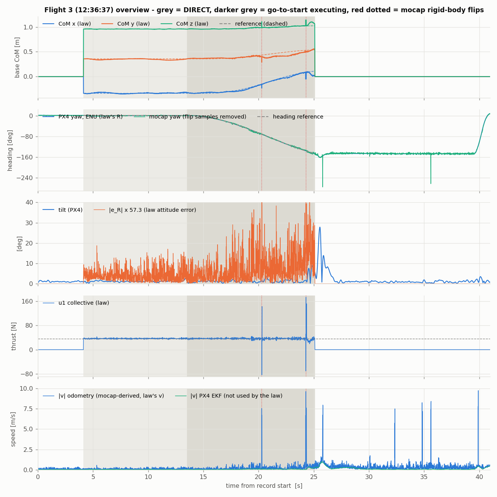
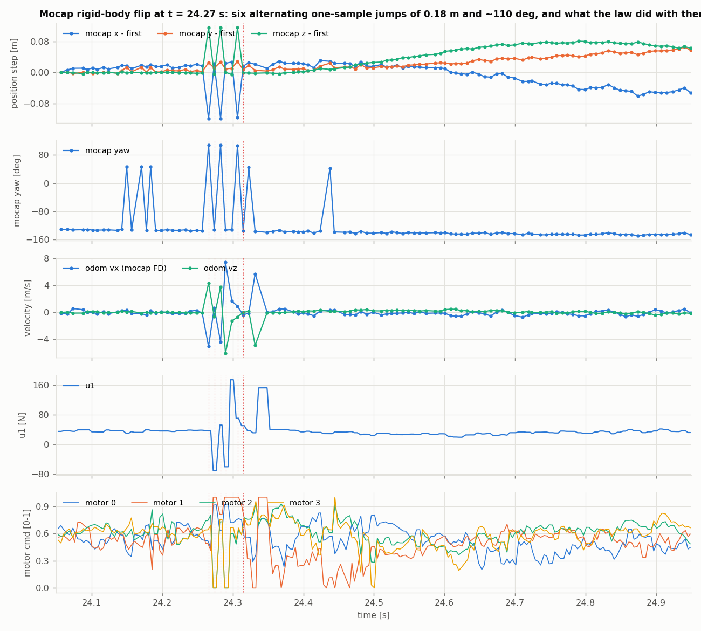
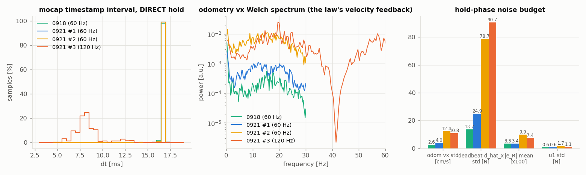
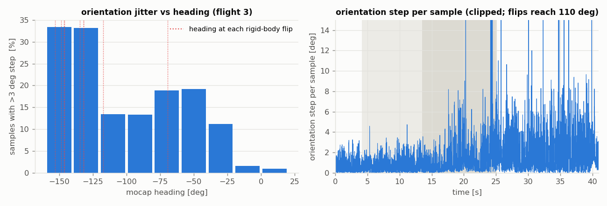
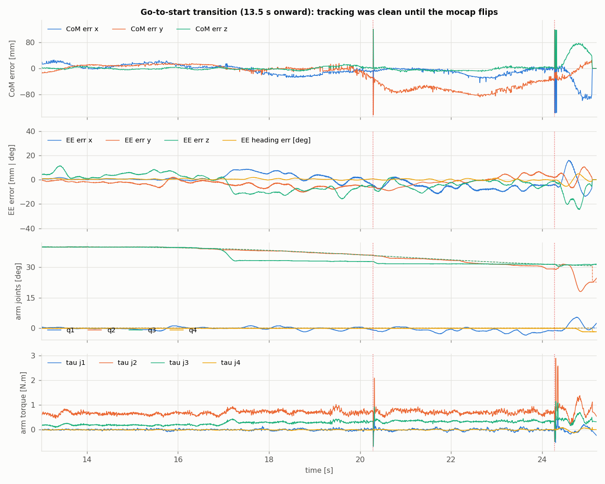

Circle attempt, flight 3 (12:36:37): the go-to-start transition was tracked, the mocap feed was not trustworthy
The vehicle only ever flew the planner's transition to the circle's start pose, and it tracked that transition to 13/9/4 mm (CoM) and 3.5/4.5/7 mm (EE) for 6.8 s. What made it look unstable were two mocap rigid-body flips (one-sample jumps of 0.18 m and ~110°) that the whole-body law consumed unfiltered, each producing a one-tick −60/+150 N collective command and a 0.1 s motor rail. The operator switched to SAFETY 0.8 s after the second flip. No watchdog tripped. Underneath, the 120 Hz mocap feed raised the law's velocity-feedback noise 2.7x over the morning's 60 Hz flights and drove a 19–21 Hz chatter through the whole law.
Verdicts
| Controller stability | STABLE No growing mode. Hold: |e_R| mean 0.074, CoM rms 10/14/2 mm (better than 0918's 21/18/4). Transition before the first flip: CoM rms 13/9/4 mm, tilt ≤ 2.7°, 0 saturations, 0 joint clamps, e_R,z 0.0006 ± 0.008 through a 148° yaw at up to 17°/s. |
| Planner | CORRECT, but the task it chose is demanding Circle READY in 4 s (defect 8e-5 m). Go-to-start solved in 10.5 ms, defect 6e-17 m, and was tracked. It commanded a 148° heading rotation with the EE nearly pinned (EE moved 4 cm, base 0.49 m), rate-limited at w_max so T = 14.85 s. The rotation carried the vehicle into headings the mocap tracks badly (below). |
| Mocap position / velocity | THE CAUSE OF THE VISIBLE EVENTS 18 rigid-body flips in 49 s (8 in DIRECT, 0918: 1, flights 1–2: 0), all at headings ≤ −70°. Odometry velocity is a short-window finite difference of mocap position; at 120 Hz its hold-phase std is 10.8 cm/s vs 2.6 (0918) and 4.0 (flight 1), and a flip becomes a 5–7 m/s velocity sample that the deadbeat observer books as 20 N of disturbance. |
| Mocap orientation | DEGRADES WITH HEADING Per-sample orientation step > 3° in 1% of samples at heading 0°, 33–40% at −120..−180°. Not consumed by the law (it reads PX4 attitude, which stayed smooth), but it says the rigid-body solve is marginal there. |
| PX4 / SAFETY | SAW THE FLIPS, FILTERED THEM SAFETY's position loop reads the SAME raw-mocap odometry, and at each later flip its tilt setpoint jumped to 23–35° for 2–3 samples. The vehicle moved ≤ 2° because that spike passes through PX4's softened attitude and rate loops and the rotor lag; in DIRECT the law drives the motors directly at 250 Hz. PX4's own EKF position moved ≤ 3 mm at every flip, but nothing in the loop reads it. The post-revert transient (27.8° tilt, 36 cm drop within 0.5 s of the switch) is the handover, not the flips. |
0. Where the feedback comes from on the hardware stack
The hardware launcher (start_whole_body_l1_4d_direct_actuation_stack_t650_aerial_manipulator.sh) starts indoor_mocap_feedback_launch.py, whose MocapOdomBridge republishes the mocap message as state_estimator/local_position/odom verbatim. In all four hardware bags (0918 and the three 0921 flights) every odometry sample is bit-identical to a mocap sample: same stamp, same position, same orientation, same twist.
| quantity | source | read by |
|---|---|---|
| position | raw mocap, passthrough | DIRECT law, SAFETY position loop, trajectory planner |
| linear velocity | raw mocap twist, a finite difference computed upstream by the mocap broadcaster | DIRECT law, SAFETY position loop |
| attitude | PX4 EKF2 vehicle_attitude (IMU fused with mocap heading) | DIRECT law, planner |
| body rate | PX4 sensor_combined gyro | DIRECT law, rate watchdog |
| EKF2 fused position / velocity | PX4 vehicle_odometry; mocap reaches EKF2 via vehicle_visual_odometry at 120 Hz | only the feedback-loss failsafe landing and the EV-fusion health check |
The EKF2-fused alternative exists (indoor_estimator_launch.py, Px4FusedOdomBridge, same output topic) but is not what flies. The launcher's reason: in DIRECT the node closes attitude, rate and mixing itself, so feeding it EKF2's estimate would put PX4's estimator inside a loop PX4 no longer closes. Note that the attitude already comes from EKF2, so that argument applies to position and velocity only.
1. What actually happened, second by second
| t [s] | event |
|---|---|
| 4.13 | DIRECT entered. Hold captured at base [−0.343, 0.357, 0.974] m, arm home, EE heading −88.5°. |
| 8.18 | EE circle READY: 2 laps, T = 51.96 s, s = 1.00, defect 8.4e-5 m. |
| 13.51 | Go To Start: transition planned (T = 14.85 s, limited by w_max), executing. Heading reference −88.5° → −236° (model frame), base 0.49 m, arm fold 40° → 30.7°. |
| 13.5–20.2 | Clean tracking (figure 5). CoM err rms 13/9/4 mm, EE 3.5/4.5/7.3 mm, EE heading 0.6°, arm q−q_d ≤ 3.1° rms (j3 friction, as on 0918). |
| 20.28 | Mocap flip #1 (heading −69°): two samples, +0.18 m / −0.18 m, orientation ±110°. Odometry velocity −3.1/−4.7/+5.0 m/s. Law: u1 16 N then 39 N, motors [0.59 0.33 0.35 0.00] for one tick, "Wrench allocator saturated: −42.4 N". Base then holds a −63 mm y offset for 4 s. |
| 24.27–24.32 | Mocap flip #2 (heading −135°): six alternating samples. Law: u1 −60 N → +50 → +152 N, motors on 0/1 rails for ~0.1 s, j2 torque 2.5 N·m, |e_R| 0.9, estimator bound hit 14 ticks. Vehicle: tilt to 8.9°, z +54 mm, x −45 mm within 0.7 s. |
| 25.09 | Operator: activate Baseline (Safety). Reference re-seeded at [0.04 0.57 1.08], yaw −146.5°. Arm folded home in 1.7 s. |
| 25.56 | SAFETY handover transient: tilt 27.8°, altitude 1.08 → 0.72 m, recovered by ~28 s. |
| 25.8, 32.3, 34.8, 35.6, 39.9 | Five more mocap flips at the parked heading (−146°..−117°). SAFETY's tilt setpoint spikes to 23–35° for 2–3 samples at each; the vehicle moves ≤ 2°. |

2. The flips: what a rigid-body mis-solve does to this law
Every flip has the same signature and the same heading dependence
Position offset ≈ [−0.13, +0.03, +0.12] m (|Δp| 0.17–0.19 m) with a simultaneous ~110° orientation flip, for one sample, then back. That is the tracker solving the uav_0 rigid body onto an alternative marker assignment (a different pivot and a rotated frame), not a dropout: mocap_status stayed "mocap_normal", there were no timing gaps (max dt 17 ms), and the 0918 NO-DATA mechanism is absent. All 18 flips occurred at mocap headings between −69° and −153°; none at the 0…+2° heading of the hold, of 0918, or of flights 1–2 (which never rotated). Orientation-only flips (~100°, no position jump) are more frequent still (figure 2, 24.15–24.19 s).
The whole-body law reads raw odometry and has no innovation gate
The client takes position and linear velocity straight from state_estimator/local_position/odom, which on the raw-mocap estimator is the mocap pose plus its finite-difference twist, unfiltered. A 0.18 m sample over 8 ms is a 22 m/s velocity; the published twist showed 5–7 m/s. With k_v = 20 that is 100–140 N of velocity term on one tick, and the deadbeat observer books the momentum step as ~20 N (d̂ hit its ±20 N bound on 14 ticks). PX4's EKF rejected the same samples (its position moved ≤ 3 mm, no reset), but neither mode reads that estimate. SAFETY consumed the flips too: its tilt setpoint spiked to 23–35° for 2–3 samples at each later flip. The difference is the command path. SAFETY's spike is a 20–30 ms attitude setpoint that PX4's softened attitude loop and the rotor lag smooth to ≤ 2° of motion; DIRECT's is a one-tick motor command.

3. The 120 Hz feed: the law's velocity feedback is a differentiated mocap position, and it got 2.7x noisier
| flight | mocap | mocap dt jitter (std) | mocap per-sample |Δp| median | odom v std x/y/z [cm/s] | deadbeat d̂_x std [N] | |e_R| mean (hold) | u1 std [N] | CoM rms hold x/y/z [mm] |
|---|---|---|---|---|---|---|---|---|
| 0918 | 60 Hz | 0.05 ms | 0.78 mm | 2.6 / 2.1 / 1.6 | 13.7 | 0.033 | 0.65 | 21 / 18 / 4 |
| 0921 #1 | 60 Hz | 0.06 ms | 1.13 mm | 3.8 / 2.6 / 2.1 | 23.6 | 0.033 | 0.79 | 17 / 12 / 3 |
| 0921 #2 | 60 Hz | 0.06 ms | 3.88 mm | 12.1 / 10.6 / 6.1 | 76.9 | 0.097 | 1.75 | 21 / 24 / 5 |
| 0921 #3 | 120 Hz | 1.43 ms | 1.67 mm | 10.8 / 5.0 / 4.2 | 91.5 | 0.074 | 1.15 | 10 / 14 / 2 |
Two separate effects, and the 120 Hz change is only one of them
(a) Halving the sample interval doubles the velocity noise for the same per-sample position noise, and the per-sample position noise itself did not halve (1.67 mm at 8 ms vs 1.13 at 16.7 ms, where true motion alone would give 0.56). The published velocity is a short finite-difference window (its spectrum has the 3-sample null at 40 Hz), so at 120 Hz it carries a broadband 19–21 Hz component of 0.11 m/s std. (b) Flight 2, still at 60 Hz, was almost as noisy (3.9 mm per sample, 12 cm/s) and its whole-body hold showed the same 3x rise in |e_R| and d̂ — tracking quality varied between flights this morning independent of the rate. In flight 3 the orientation jitter also grew as the heading rotated (figure 4), consistent with a marginal rigid-body solve away from the calibrated heading.
What the velocity noise costs: k_v·σ_v = 2.2 / 1.0 / 0.8 N of force chatter, the deadbeat estimate reads 91 N std (its 2 rad/s filter leaves 0.8 N), e_R chatters at 19 Hz with 95% of its power above 5 Hz while PX4's attitude has none there, and the motors chatter at 12–14 Hz. Position hold was not hurt (10/14/2 mm, the best of the four flights), so this is actuator-level chatter, not instability. PX4's own EKF velocity on the same flight had 1.2 cm/s std at 100 Hz, 9x cleaner.


4. The transition itself

Nothing in the tracked transition suggests a controller or planner defect
The base flew 0.49 m and rotated 148° in heading with e_R,z at 0.0006 ± 0.008 (the yaw loop never lagged), EE heading error 0.64° rms, and no saturation. After the first flip the base held a −63 mm y offset for 4 s that the observer states do not explain (d̂_t, ŵ_q unchanged); it is larger than 0918's ±15–35 mm hold wander and is left open.
Why the transition is a 148° spin
The circle's start heading is the tangent at its start point; the hold heading was −88.5°, so the planner rotated the platform most of the way round with the EE pinned, rate-limited at w_max. That is by the planner's definition of the task, not an error, but it took the vehicle through 80° of headings where this mocap setup flips, and it is the slowest part of the flight (T = 14.85 s for 0.49 m). Choosing the circle's start point where the tangent matches the current heading would remove the spin entirely.
5. What to change before the next attempt
- Mocap rigid body first. Re-check the uav_0 marker asset for symmetry / near-duplicate solutions, and test-track the vehicle by hand through a full yaw circle at the flight height before flying: a flip rate of 0.4 s⁻¹ at −130° heading is visible offline. The EE marker cube (obj_0) sits 0.26 m from the base; make sure its markers cannot be absorbed into uav_0's asset.
- Gate what the law consumes. The client takes odometry verbatim. Either run the EKF2-fused estimator (indoor_estimator_launch.py) for DIRECT feedback, or add a simple innovation gate in the client (reject a position step > 5 cm / velocity > 2 m/s for one sample, hold the previous state). PX4's EKF position did exactly this: it moved ≤ 3 mm at every flip.
- Velocity source. At 120 Hz a short finite-difference is the wrong velocity estimator: use PX4's EKF velocity (1.2 cm/s std) or a longer differentiator with the timestamp jitter removed (the stamps at 120 Hz are 6–13 ms apart while the frames are uniform). Going back to 60 Hz alone is not sufficient: flight 2 was as noisy at 60 Hz.
- Task choice. Start the circle at the tangent that matches the current heading, or accept the spin and verify mocap over that heading range first.
- Keep the 200 Hz sensor_combined / vehicle_attitude. No adverse sign: PX4 attitude was smooth (0% power above 5 Hz), the gyro's high-frequency fraction was lower than on 0918, and the law's 250 Hz tick had p99 5.5 ms.
6. Reproduce
tools/extract_bag.py <bag> out.npz (ROS 2 sourced, /usr/bin/python3), then tools/compare_flights.py, tools/spike_anatomy.py, tools/phase_stats.py, tools/velocity_source.py, tools/transition_and_heading.py, tools/yaw_trace.py on the npz files (they expect c1/c2/c3/f18.npz for flights 1/2/3 and 0918), and PYTHONNOUSERSITE=1 /usr/bin/python3 tools/figures.py <npz dir> figures/.